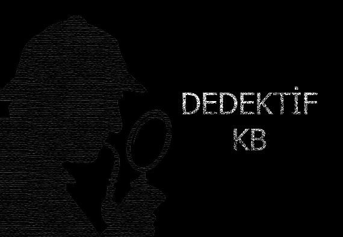
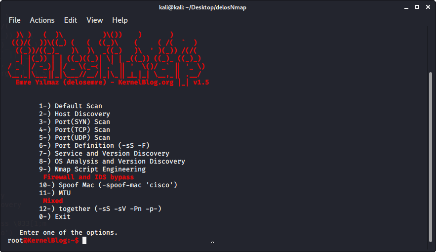
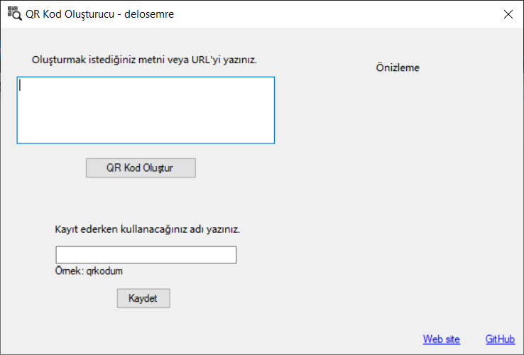

Çalışmalarım
Siber güvenlik ve yazılım alanında yaptığım çalışmalarım/projelerim.
KernelBlog
KernelBlog 2017 yılında hayata geçirilmiş bir projedir. Proje ülkemizde birçok teknoloji ile ilgili röportaj, makale vb. konularda gönüllü ekibiyle içerikler üretmeyi hedeflemektedir.
Dedektif-kb
Pasif bilgi topalamada yardımcı olması için geliştirmeye çalıştığım, ufak bir proje.


delosNmap - Nmap Script
Sık kullanılan nmap paremetrelerini, otomize bir şekilde kullanmayı sağlamak için geliştirmeye çalıştığım bir araç.
QR Kod Oluşturucu
C# Form ile yapmış olduğum, QR kod oluşturucu.
